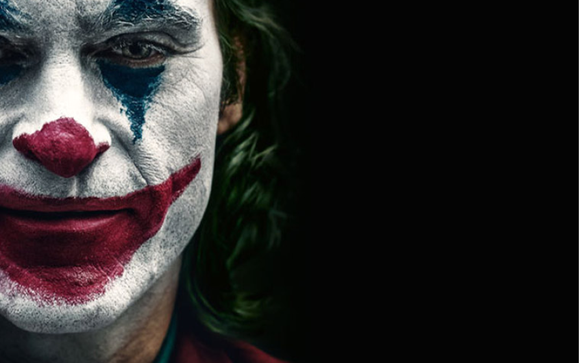

Análisis
En la primera temporada de Muñeca Rusa exploramos cuáles son las claves de las producciones que más nos han llamado la atención en los últimos días.
Temporada 1“Hecho en Casa” es el resultado de la imaginación de 17 directores de cine que nos cuentan, a través de sus cortos, cómo percibieron la cuarentena.
Si hay algo que me gusta de ‘Jojo Rabbit’ es su inocencia.
Asimilar la noticia de una enfermedad terminal puede ser una realidad más que dolorosa para cualquier ser humano y para quienes los rodean.
11
20
32